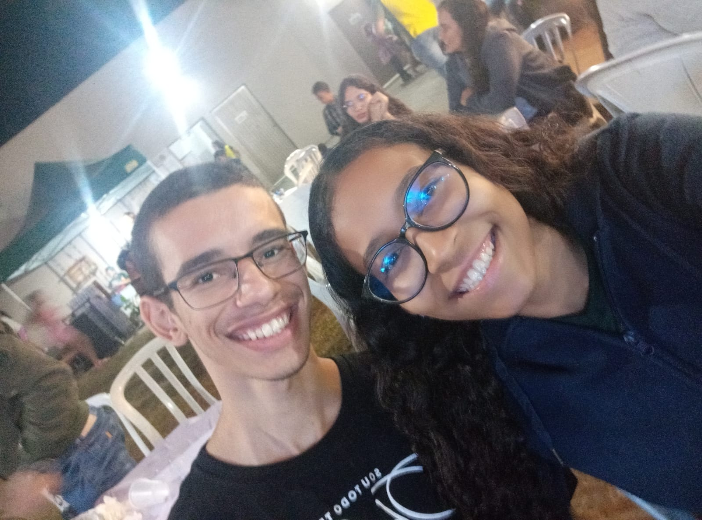
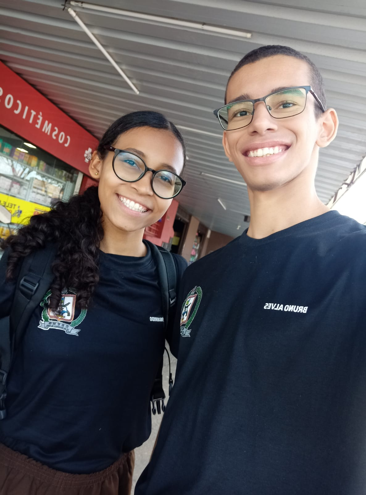
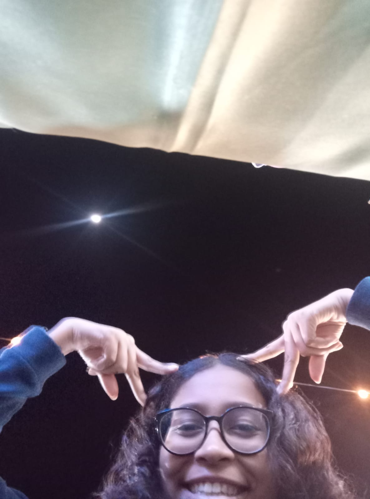

Preparei para você essa breve, porém, de coração, recordação S2
Essa foi nossa primeira foto juntos fora do colégio :D (demorou mas foi tirada (em pleno sábado))
Eu sou é sortudo em poder te chamar de "amor". Eu te amo muito, não esquece não, hein! 💕 (oh modesu que gatinha linda é essa na foto 😍
Tem mais coisa pra baixo
Obrigado por aceitar estar comigo! Desejo que tenhamos muitos momentos felizes juntinhos ❤️. Dizem que os votos do casamento começam no namoro, e até que faz sentido, então pretendo ser sempre seu apoio em todos os momentos felizes e tristes, até que um dia eu possa reafirmar verbalmente a frase completa no altar ;)